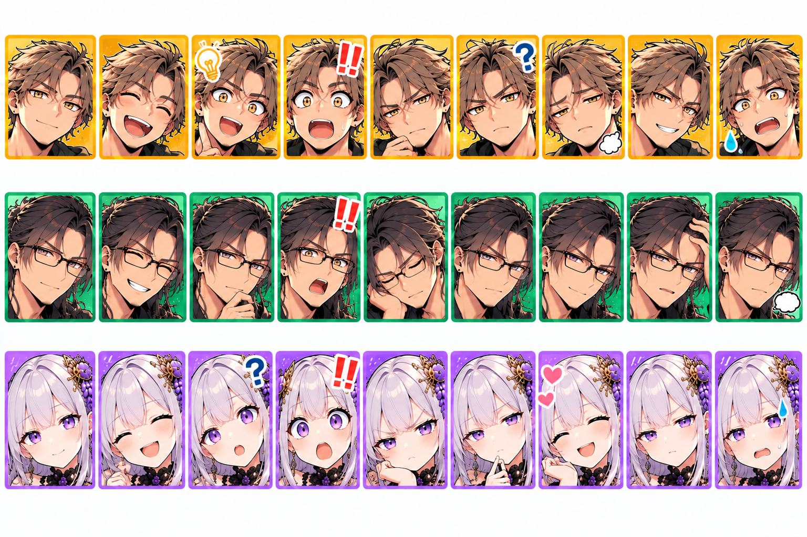

保存したつもりが、いちばん怖い。
RESOS研究｜だいたい本気の素人AI研究所
「その話、保存したよね？」
この一言で、急に研究所が静かになる。そんな場面は、できれば想像だけで済ませたい。
今回は、AIとの会話をRESOSへ残すときの話。「保存できなかった」より、その手前にある「保存したつもり」が怖いのです。
※開発記録と所長による補足をもとに再構成した会話です。冒頭は問題提起のための架空の場面であり、実際に記録の消失を確認した事例ではありません。
「保存したよね？」で始まる怪談

例えばさ、昨日ものすごくいい案が出たとするでしょ。
うん。
それで今日、「昨日のあれ、続きやろう！」って言ったら、誰も中身を持ってないの。
朝から嫌な話を持ってきたな。
保存してなかった？
って聞いたら、みんな「保存したはず」って言う。
「はず」が三つ集まっても、記録一件にはならねぇんだよ。
怖いねえ。幽霊は出ないのに、昨日の名案だけ出てこない。
保存できなかったって分かっていれば、元の会話を残すとか、やり直すとかできるんだけどね。
保存済みだと思うと、確認をやめる。次に必要になってから気づくと、探すところから再開だ。
「未来の私たちに渡した！」って安心したのに、未来の私たちが受取窓口で困るんだ。
だから、「保存した」が何を指してるのか、一回分けて考えたい。
外で考えたことを、研究所に持ち帰る
そもそも、RESOSにはどこから記録を持ってくるの？
ここで話したことだけじゃない。CopilotやGeminiも並行して使ってるから、そっちで考えたことも残したい。
別のAIと調べたこと、試したこと、なぜその案を選んだか。その場だけに置いとくと、続きに戻るのが面倒なんだよ。
あっちで発見、こっちで実験。研究ノートがあちこちにある感じ？
そう。それぞれの会話や検討内容を、RESOSが受け取れる形式で出してもらって、持ち帰りたい。
そこでクリップボード？
うん。コピーした内容を受け取って、確認して、既存の保存処理へ渡す。Clipboard Bridgeは、その入口。
各サービスの中の記憶を丸ごと吸い上げる装置じゃねぇぞ。残す内容を文章として出してもらって、それを渡す。
研究所への持ち帰り袋なんだね。
ただ、袋に入れたところで安心すると困る。
まだ玄関にも着いてねぇからな。
文章ができた。コピーした。……保存した？
でも、AIに「RESOS用にまとめて」って頼んで、きれいな文章が出てきたら、ちょっと終わった気になるね。
なる。内容を確認して、コピーしたら、作業した感じもあるし。
そこで気持ちだけ完了するなよ。
保存用の文章は、できてるんでしょ？
保存用の文章ができた。それだけだ。
次にコピーして、受け取る側へ渡す。そこで入力として受け付けられて、保存処理が通る必要がある。
ああ、買い物リストを書いたのと、買い物が終わったのは違うか。
リストをコピーしたからって、冷蔵庫に卵は増えねぇ。
増えてほしいなあ、その機能。
それは別の開発になる。
始めるなよ。
つまり、「記録案ができた」「コピーできた」「保存できた」を、同じ言葉で済ませないほうがいい。
「できました！」だけだと、何ができたか分からないんだ。
元気な返事は一個でも、途中の段階はいくつもあるからな。
実際には、入口で何度かつまずいた
その入口、実際に止まったことはあるの？
ある。記録では、コピーしたときに専用タグの改行が消えた問題と、受け付けない項目が入力に入った問題が残ってる。
本文をちゃんと書いても、渡し方で止まるんだ。
決まった形で受け取る入口だからな。人間には似た文章に見えても、受け取る側の条件に合わなきゃ通らない。
未確認の項目を、AIが推測で足してしまったことも記録されてる。
「この欄も付けたら親切かな！」って？
その親切で受付が止まる。気の利いた増築をする場所じゃねぇんだよ。
しかも、前に成功した形式と比べるより、その場で少しずつ直す対応が続いた。
直してるつもりで、正解の形から離れることもあるのか。
だから、一回戻って照合したい。目の前のエラーだけ追いかけてると、全体が違ってるのを見落とす。
この件は、最終的には修正して、保存成功と確認完了の報告まで残ってる。
じゃあ、記録が黙って消えた事件ではないんだね。
ああ。見える形で止まった失敗だ。ただ、途中で「もう保存した」と思い込んでたら、そこで確認が終わってたかもしれない。
こういうところこそ、プロンプト制御
AIって、文章を考えるのは得意なのに、決まった形にするところで余計なことしちゃうんだね。
だからこそ、ここはプロンプトで制御するところだと思う。
内容を考える仕事と、決まった形式を再現する仕事を、まとめて自由作文にしないってことだな。
何を固定するの？
保存タグ、項目の名前、配置。確認済みのテンプレートを示して、どこを書き換えてよくて、どこは変えないかを伝える。
未確認の項目を足さない。形式が分からなくなったら推測で埋めず、確認した仕様や成功例と照合する。その辺も明記したい。
「いい感じにまとめて」だけじゃ、記録の中身も、入れ物も、両方アレンジされちゃうのか。
考えてほしいのは、何を残すか、どう整理するか。決まっている入れ物まで毎回発明してほしいわけじゃない。
保存するたびに伝票の新作を出されても困るからな。
今月の新作伝票。欄が増えて、受付不可。
発売しないでほしい。
じゃあ、エラーになったときの動きも決めておく？
そう。思いつきの修正を重ねる前に、固定した形式との違いを見る。
雑談では自由に広げていい。定型保存に入ったら、確定してる条件を守る。その切り替えを、ちゃんと伝えるわけだ。
私の脱線まで、保存用の項目に増やさないようにしないとね。
お前の脱線欄、何ページになるんだよ。
頼み方を整えても、最後は確かめる
じゃあ、プロンプトをきっちり作れば安心？
間違いを減らす工夫にはなる。ただ、それで毎回正しいと決まったわけじゃねぇ。
出てきた入力の検証と、保存したあとに読み直す確認は残したい。
入れたのに、すぐ読むの？
残したかった本文と、保存先から戻ってきた本文が同じかを見る。
保存先と記録の識別情報も確認する。似たタイトルの別記録を読んで安心してもしょうがねぇからな。
タイトルは合ってるけど、本文の後半がない、なんてことも確認したいね。
そう。タイトルがあるとか、文字数が同じとか、それだけで全部一致したとは言えない。
だから本文を照合する。仕組み側では、内容の指紋みたいなハッシュ値も使う。
「同じ大きさの箱です！」から、「中身も同じです！」まで進めるんだ。
ただ、中身が同じでも、その説明が正しいかは別に確かめる必要がある。
間違った内容も、そのまま保存できちゃう？
忠実にな。保存確認は、文章の正しさまで保証する魔法じゃねぇ。
返事がないときも、決めつけない
もう一つ。保存中に返事が途切れたとき。
もう一回送る？
その前に、保存されたか確認だ。返事がないことと、保存されてないことは同じじゃない。
保存は終わってて、「終わったよ」だけ届いてない可能性もあるんだ。
そういうときは、結果不明として扱う。勝手に成功にも失敗にもしない。
再送するなら、同じ記録の同じ内容を再送してると分かるようにする。
番号だけ変えて送り直すと、別の記録として増えるかもしれねぇ。
受付で返事がないから、別名でもう一回申し込むのはだめか。
保存処理で変装するな。
何を送って、何が確認できたかを追えるようにしておきたい。
その後、どこまで進んだ？
今は、この確認も少しずつ仕組みになってるの？
保存候補を管理する初期実装では、コピーしただけで保存済みにしないことや、本文の版を管理するところが作られてる。
古い本文を確認した結果を、修正後の本文へ使い回さないためだな。
昨日の提出物の確認印を、今日の修正版に貼らない、と。
そのあたりの試験は行われてる。ただ、初期報告の試験には、仮の受け渡し先やReaderの応答を使ったものもある。
だから、それだけで本番への保存から読戻しまで、全部通しで確認したとは言わない。
実際に保存して、本文まで確認した例は？
後の別の開発作業では、5,971文字の本文を削らず保存して、読戻しで完全一致を確認した報告がある。
今回、その記録もRESOSから取得できた。
それは、具体的に届いた一件なんだね。
ああ。ただし、個別に許可された直接保存の経路での実績だ。クリップボード経由も含めて、何でも検証済みになったわけじゃない。
成功した範囲を、そのまま残す。確認してないところまで広げない。
成功テンプレートを固定するボタンの話は？
改善方針は記録されてる。ただ、今回読めた資料では、その再実装が完了したところまでは確認できなかった。
そこも「作る案を保存した」と「作って動いた」を分けよう。
保存の話の中にも、「できたつもり」が入り込む隙があるんだね。
「保存したはず」を、次の作業に持ち越さない
毎回、長い確認報告が欲しいわけではないんだけどね。
表示は短くていい。何を確認したか、その根拠をたどれればいいんだ。
途中だったら？
「保存用の文章を作成した。正式保存はまだ」でもいい。
「保存処理は成功。読戻しは未確認」でもいい。そこで止まってると分かれば、次の作業が決まる。
何でも「保存しました！」に丸めないんだ。
そう。CopilotやGeminiで考えたことも、RESOSへ残したと確認できてから、安心して続きを始めたい。
未来の自分たちに渡すなら、受取確認くらい付けようぜ。
じゃあ、昨日のすごい名案も、ちゃんと残せるようにしないと。
どんな案だった？
買い物リストをコピーすると、冷蔵庫に卵が増える仕組み。
今日の脱線じゃねぇか。記憶まで盛るな。
それは保留で。
はーい。保留を保存済みにしないようにね！
今回の学び
怖いのは、保存に失敗することだけではありません。まだ途中なのに、保存が終わったと思って確認をやめてしまうことです。
今回の記録では、コピー時の改行消失や、未対応の入力項目による失敗が確認されています。最終的な保存成功の報告はありますが、そこへ至る過程には、成功形式を再現できず、推測による修正を重ねた問題がありました。
ここから得た学びは、こういう定型作業こそ、プロンプトで役割と変更範囲を明確にすることです。
- 決まった部分を固定する。 保存タグ、入力項目、配置は、確認済みの形式を使う。
- 考えてほしい部分を示す。 AIには、タイトルや本文など、記録内容の整理を担当してもらう。
- エラー時の戻り先を決める。 推測で継ぎ足す前に、仕様や既知の成功形式と照合する。
- 完了の段階を分ける。 文章作成、受け渡し、保存処理、読戻し確認を一つの「できました」にまとめない。
プロンプト制御で失敗を減らし、入力検証と読戻しで結果を確かめる。
「保存したつもり」を、「残したい内容が保存先にあると確認できた」に変える。
研究の続きを安心して始めるために、そこまでを一つの作業として扱いたいと思います。
執筆に参照した開発記録
- RESOS Clipboard Bridge v0.1 仕様まとめ
- RESOS自律保存提案機能 仕様書 v0.2
- RESOS自律保存提案 初期実装報告 v0.1
- RESOSクリップボード保存失敗分析とプロンプトボタン再実装方針 v0.1
- 後続の開発チャットにおける、5,971文字の保存・読戻し確認報告と対応するRESOS記録
Clipboard Bridgeの主な利用目的は、所長による今回の補足を反映しています。人物の口調と役割は、RESOS・所長のキャラクター設定、およびカレンの従来版プロンプトを参照しています。
コメント
比較公開版では投稿を受け付けていません。現在のサイトでコメントを読む・投稿する →